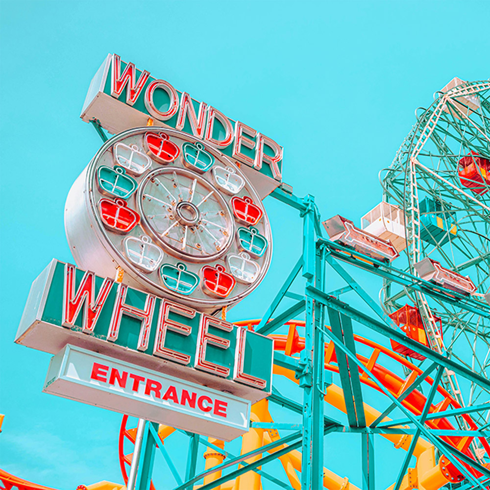

Wonder Ferris Wheel
This site highlights some interesting landmarks across New York City's five boroughs.
New York City is filled with iconic landmarks that showcase its history and energy. From the Statue of Liberty and the Empire State Building to Times Square and Central Park, each site captures the spirit of the city that never sleeps.

The Wonder Wheel in Coney Island is one of New York City’s most beloved and enduring landmarks. Standing 150 feet tall, this iconic Ferris wheel has been thrilling visitors since it opened in 1920. Unlike ordinary Ferris wheels, the Wonder Wheel features both stationary and swinging cars, giving riders a unique mix of excitement and panoramic views of the Coney Island Boardwalk and the Atlantic Ocean. Designated a New York City landmark, it remains a symbol of classic seaside amusement and the joyful spirit of Coney Island’s historic past.
Wonder Ferris Wheel
Yankee Stadium
Roosevelt Island

Statue of Liberty
Empire State Building
Staten Island Ferry